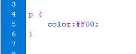
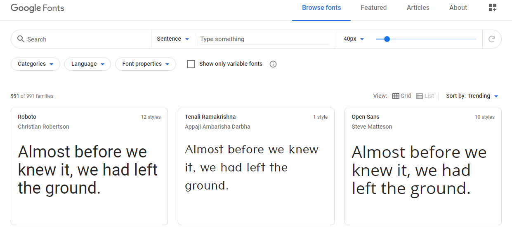
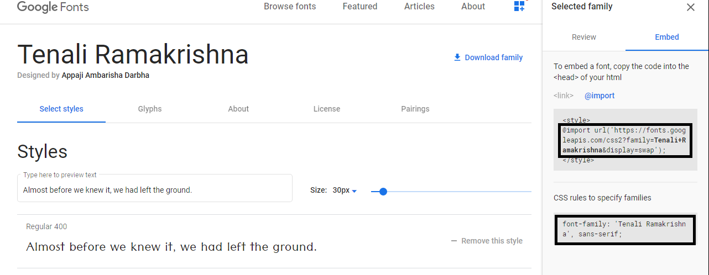
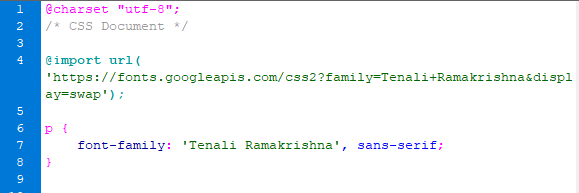
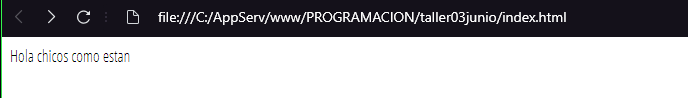

Resumen de la Clase de 03 de Junio 2020
Introducción
Css es un Lenguaje de hojas de estilo, es decir nos permite aplicar estilos de manera selectiva a elemtos html. Por ejemplo, para seleccionar todos los elementos de párrafo en una pagina html y volver el texto de ellos de color rojo. Se debe escribir este css:

Lo que se aprendió el día de hoy fue el poder poner diferente tipo de letra del que ya cuenta el programa, es decir poder importar cualquier tipo de letra y poder añadir a cualquier texto que nosotros deseamos implementar, existe muchas páginas que proporcionan este servicio uno de ellos es google fonts, lo pasos para poder añadir son sencillos:
1.- Nos deriguimos al enlace https://fonts.google.com
2.- Seleccionamos el estilo de letra que mas nos agrade.

3.- Una ves elegido el estilo copiamos su URL y CSS rules to specify families.

4.- En nuestro CSS pegamos la URL y CSS rules to specify families especificando en que etiqueta queremos aplicar.

5.- Asi podremos modificar el tipo de letra a nuestro archivo html.

Las tablas constituyen una herramienta muy eficaz para presentar datos de tabla y establecer el diseño de texto y gráficos en una página HTML. Una tabla consta de una o varias filas, cada una de las cuales consta, a su vez, de una o más celdas.
LISTAS
Es posible insertar texto a modo de lista. A su vez, la lista puede ser numerada o con viñetas.
Para que un texto que ya ha sido introducido en el documento se convierta en una lista, simplemente hay que seleccionarlo y pulsar sobre la opción de lista correspondiente, ya sea a través del inspector de propiedades, o a través del menú Formato.
La lista con viñetas (sin ordenar) se selecciona a través del botón , mientras que la lista numerada (ordenada)
Regresar Inicio